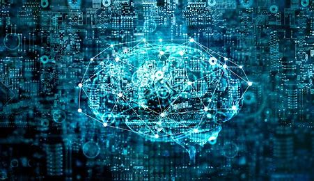
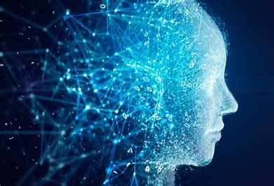

AI Art Generator is a tool that uses artificial intelligence (AI) algorithms to generate unique and original pieces of art. These algorithms are trained on a large dataset of artworks and can generate new pieces of art by combining and transforming the elements of the dataset. AI art generators can be used by artists as a creative tool or by anyone who is interested in exploring the possibilities of AI-generated art. The art generated by AI art generators can range from simple sketches to complex and detailed paintings, depending on the capabilities of the AI algorithms and the inputs provided by the user.
Reactive MachinesThese are the oldest forms of AI systems that have extremely limited capability. They emulate the human mind’s ability to respond to different kinds of stimuli. These machines do not have memory-based functionality. This means such machines cannot use previously gained experiences to inform their present actions, i.e., these machines do not have the ability to “learn.” These machines could only be used for automatically responding to a limited set or combination of inputs. They cannot be used to rely on memory to improve their operations based on the same. A popular example of a reactive AI machine is IBM’s Deep Blue, a machine that beat chess Grandmaster Garry Kasparov in 1997.
Limited MemoryLimited memory machines are machines that, in addition to having the capabilities of purely reactive machines, are also capable of learning from historical data to make decisions. Nearly all existing applications that we know of come under this category of AI. All present-day AI systems, such as those using deep learning, are trained by large volumes of training data that they store in their memory to form a reference model for solving future problems. For instance, an image recognition AI is trained using thousands of pictures and their labels to teach it to name objects it scans. When an image is scanned by such an AI, it uses the training images as references to understand the contents of the image presented to it, and based on its “learning experience” it labels new images with increasing accuracy.Almost all present-day AI applications, from chatbots and virtual assistants to self-driving vehicles are all driven by limited memory AI.
Theory of MindWhile the previous two types of AI have been and are found in abundance, the next two types of AI exist, for now, either as a concept or a work in progress. Theory of mind AI is the next level of AI systems that researchers are currently engaged in innovating. A theory of mind level AI will be able to better understand the entities it is interacting with by discerning their needs, emotions, beliefs, and thought processes. While artificial emotional intelligence is already a budding industry and an area of interest for leading AI researchers, achieving Theory of mind level of AI will require development in other branches of AI as well. This is because to truly understand human needs, AI machines will have to perceive humans as individuals whose minds can be shaped by multiple factors, essentially “understanding” humans.
Self-awareThis is the final stage of AI development which currently exists only hypothetically. Self-aware AI, which, self explanatorily, is an AI that has evolved to be so akin to the human brain that it has developed self-awareness. Creating this type of Ai, which is decades, if not centuries away from materializing, is and will always be the ultimate objective of all AI research. This type of AI will not only be able to understand and evoke emotions in those it interacts with, but also have emotions, needs, beliefs, and potentially desires of its own. And this is the type of AI that doomsayers of the technology are wary of. Although the development of self-aware can potentially boost our progress as a civilization by leaps and bounds, it can also potentially lead to catastrophe. This is because once self-aware, the AI would be capable of having ideas like self-preservation which may directly or indirectly spell the end for humanity, as such an entity could easily outmaneuver the intellect of any human being and plot elaborate schemes to take over humanity. The alternate system of classification that is more generally used in tech parlance is the classification of the technology into Artificial Narrow Intelligence (ANI), Artificial General Intelligence (AGI), and Artificial Superintelligence (ASI).
Artificial Narrow Intelligence (ANI)This type of artificial intelligence represents all the existing AI, including even the most complicated and capable AI that has ever been created to date. Artificial narrow intelligence refers to AI systems that can only perform a specific task autonomously using human-like capabilities. These machines can do nothing more than what they are programmed to do, and thus have a very limited or narrow range of competencies. According to the aforementioned system of classification, these systems correspond to all the reactive and limited memory AI. Even the most complex AI that uses machine learning and deep learning to teach itself falls under ANI.
